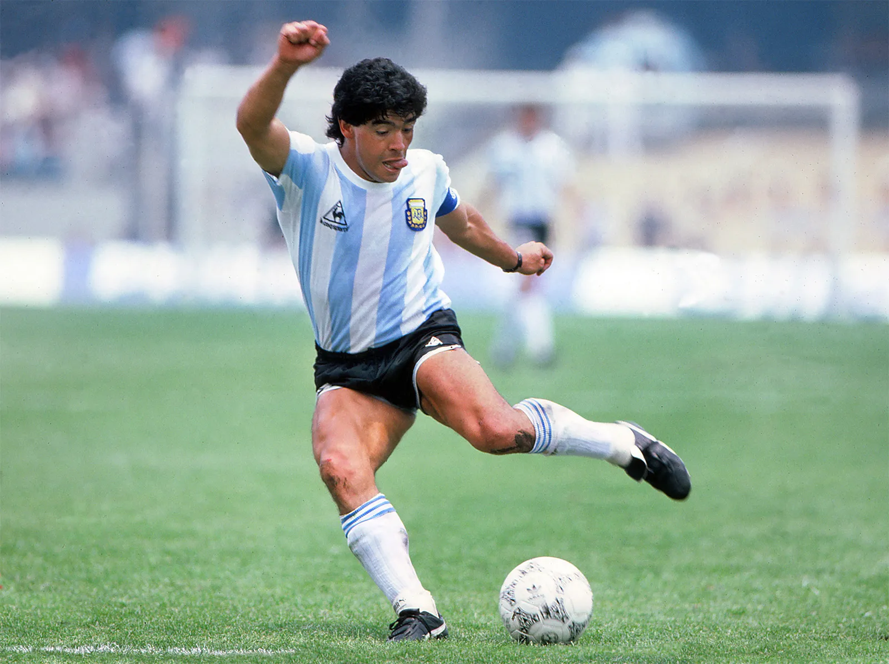

Diego Maradona – The Hand of God
Full Name: Diego Armando Maradona
Date of Birth: October 30, 1960
Died: November 25, 2020
Country: Argentina 🇦🇷
Position: Attacking Midfielder / Forward
Clubs: Argentinos Juniors, Boca Juniors, FC Barcelona, Napoli, Sevilla, Newell's Old Boys
Career Highlights
- FIFA World Cup Champion (1986)
- Scored the "Goal of the Century" vs. England
- Scored the infamous "Hand of God" goal
- Won 2 Serie A titles with Napoli
- 1986 World Cup Golden Ball Winner
- One of the greatest footballers in history
Playing Style
- Unmatched dribbling and ball control
- Creative and explosive playmaker
- Feared and admired by defenders worldwide
- Known for passion and charisma on the pitch
Quote
“What Zidane could do with a ball, Maradona could do with an orange.” – Michel Platini
Fun Facts
- Nicknamed "El Diego" and "D10S"
- Number 10 jersey is iconic in Argentina and Naples
- Lived a passionate and controversial life
- National hero and cultural icon in Argentina
- Coached Argentina at the 2010 World Cup

← Back to Football Index